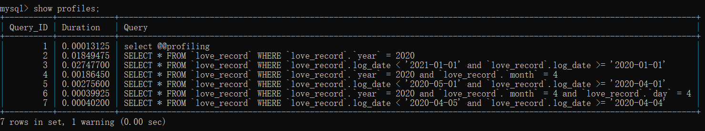

背景
问题来源：做一个按年月进行记录的范围查询。
想到可以做按年月字段（年月日）的联合索引，或者直接使用时间戳进行字段范围查询，但是两者除了存储开销上面的区别外，查询时间上有什么区别吗？
tip：使用数据库MySQL8.0.19
建表
直接上表结构与索引：
1 | CREATE TABLE `love_record` ( |
- 记录表，自增id，年，月，日字段以及时间戳字段
- 设置年月日的联合索引
- 设置时间戳的索引
模拟数据
存储过程插入数据（结束后总共982657条数据，暂时当做是百万级吧）
1 | DROP PROCEDURE IF EXISTS proc_initData;--如果存在此存储过程则删掉 |
查询对比
主要使用EXPLAIN 语句，SHOW PROFILE，SHOW STATUS
先上结果图：

查询范围为年
年月日联合索引查询
1
EXPLAIN SELECT * FROM `love_record` WHERE `love_record`.`year` = 2020;
解释结果：
id select_type table partitions type possible_keys key key_len ref rows filtered Extra 1 SIMPLE love_record - ref year_month_day year_month_day 5 const 34310 100.00 - 时间戳范围查询
1
EXPLAIN SELECT * FROM `love_record` WHERE `love_record`.log_date < '2021-01-01' and `love_record`.log_date >= '2020-01-01';
1
2
3
4
5解释结果：
| id | select_type | table | partitions | type | possible_keys | key | key_len | ref | rows | filtered | Extra |
| :--: | ----------- | ----------- | ---------- | --------- | ------------- | --------- | ------- | ----- | --------- | -------- | -------------------------------- |
| 1 | SIMPLE | love_record | - | **range** | date_time | date_time | 5 | const | **33504** | 100.00 | Using index condition; Using MRR |
查询范围为月
年月日联合索引查询
1
EXPLAIN SELECT * FROM `love_record` WHERE `love_record`.`year` = 2020 and `love_record`.`month` = 4;
解释结果：
id select_type table partitions type possible_keys key key_len ref rows filtered Extra 1 SIMPLE love_record - ref year_month_day year_month_day 10 const,const 1440 100.00 - 时间戳范围查询
1
EXPLAIN SELECT * FROM `love_record` WHERE `love_record`.log_date < '2020-05-01' and `love_record`.log_date >= '2020-04-01';
解释结果：
id select_type table partitions type possible_keys key key_len ref rows filtered Extra 1 SIMPLE love_record - range date_time date_time 5 - 1440 100.00 Using index condition; Using MRR
查询范围为日
年月日联合索引查询
1
EXPLAIN SELECT * FROM `love_record` WHERE `love_record`.`year` = 2020 and `love_record`.`month` = 4 and `love_record`.`day` = 4;
解释结果：
id select_type table partitions type possible_keys key key_len ref rows filtered Extra 1 SIMPLE love_record - ref year_month_day year_month_day 15 const,const,const 48 100.00 - 时间戳范围查询
1
EXPLAIN SELECT * FROM `love_record` WHERE `love_record`.log_date < '2020-04-05' and `love_record`.log_date >= '2020-04-04';
解释结果：
id select_type table partitions type possible_keys key key_len ref rows filtered Extra 1 SIMPLE love_record - range date_time date_time 5 - 48 100.00 Using index condition
注意到范围查询在进行年和月范围的时候，会用到MRR，MRR全称是Multi-Range Read，是MYSQL5.6优化器的一个新特性。会将非索引覆盖的情况第一次进行主键时，查询到结果集放在buffer中，然后对结果集按照主键进行排序（主要区别），然后再进行回表操作，从而将随机IO转换为顺序IO，减少磁盘随机IO和减少主键索引的访问次数（大约减少为之前次数/buffer_size）。
未完待续…
虽然EXPLAIN语句分析中联合索引的查询类型是ref，范围查询的类型是range，通常情况下ref是快于range，实验也验证了，待续。。。